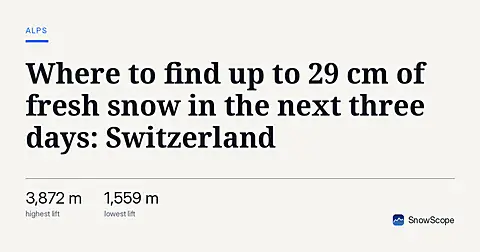

Zermatt snow forecast 23–29 November 2026: a useful 23 cm on the upper runs
Next week brings meaningful snow to Zermatt across all heights. The upper slopes around 3800 m are forecast to gain 23 cm (possibly as much as 39 cm), while mid-mountain will see 19 cm and the base around 1700 m will receive 16 cm.
See the live snow forecast for Zermatt in the SnowScope appSnow depth, powder alerts and the 3D map, free.
When and where the snow falls
The week of 23–29 November is not uniformly snowy. Thursday 26 November stands out: the peak snow day, with 12 cm likely at the top and a high forecast of 21 cm. Wednesday 25 and Sunday 29 also contribute a few centimetres each; the remaining days stay nearly dry.
Height matters sharply. At 3800 m you have 23 cm of potential new snow for the week. Drop to mid-mountain (2700 m) and that falls to 19 cm. At the base (around 1700 m) expect only 16 cm, suggesting the snow line will sit on the lower slopes, with wet snow and possibly rain in the valley itself.

Which runs to target
Glacier terrain holds snow better in marginal seasons. The Matterhorn glacier slopes and the Theodul glacier towards Italy collect and preserve the new powder. The Gornergrat side, being the coldest sector of Zermatt, favours stable snow conditions even when mild spells strike lower elevations.
The home runs descending to Furi and Zermatt village will be the first to suffer if temperatures rise. Ski them early in the week if you want them soft; by the week's end they may become heavy or patchy. The upper glacier runs, by contrast, should stay rewarding all week.
The foundation from earlier this week
Before the main event next week comes a first round: from 17 to 20 November, the upper slopes gain 34 cm and the base receives 16 cm. This sets up a stronger base than a bare mountain, so Thursday's fresh snow will land on something solid rather than on thin early-season cover.
Zermatt's year-round glacier skiing means new snow is a refinement to existing depth, not a season-starter. By the time the 23–29 November round arrives, the snowpack should already be reasonably established.
How certain is the forecast
The midpoint forecast of 23 cm at the top comes with a broad uncertainty range. The low case is 7 cm; the high case reaches 39 cm. This spread reflects the challenges of predicting mountain snow in early season, when small shifts in temperature or storm track make large differences.
Plan around the central 23 cm, but keep the high case of 39 cm in mind as a potential bonus. Each day the forecast will be updated; the Zermatt resort page shows the latest numbers.
Nearby alternatives
Cervinia (10 km away) is forecast to see 23 cm at the top next week, the same as Zermatt. Saas-Fee (18 km) edges slightly lower at 22 cm, while Verbier (39 km) sits at 24 cm. The storm system is broad; these differences are small.
Choose your resort based on terrain, lift access and aspect, not on these marginal snow totals. All three will receive useful fresh snow across the same dates.
Questions before you go
Early-season snow on a thin base: consult the Swiss avalanche bulletin if you plan any off-piste descents. Check Zermatt's official opening date and lift status separately; forecast snow depth does not confirm that lifts are running or that the resort is fully operational.
Tips for skiers
- Ski Thursday 25 or the morning of Friday 27 November for the freshest snow on the upper slopes and glacier terrain.
- Stay high: the gap between 23 cm at 3800 m and 16 cm at the base means lower runs may turn wet or slow. Prioritise glacier runs and the Gornergrat side.
- Read the Swiss avalanche bulletin before leaving the piste; new snow on a young pack demands caution off-piste.
- The high forecast is 39 cm at the top—a good day could exceed expectations, so stay flexible.
- Confirm Zermatt's lift status directly with the resort; snow forecast and operational readiness are separate questions.
About these numbers
Resort snow depths are the deepest snow on the resort's upper slopes on the date shown; they are estimates for an area, not a measurement at one point. Forecasts can change. Always read the official avalanche bulletin before going off-piste.
Cite this report
For research, teaching or the press: the numbers and charts are free to reuse under CC BY 4.0 with this citation.
SnowScope (2026), Zermatt snow forecast 23–29 November 2026: a useful 23 cm on the upper runs, https://snowscope.app/blog/en/2026/11/zermatt-snow-forecast-next-week-23-29-november-2026.html, accessed 2026-11-16
SnowScope (Atlas Labs). (2026, November 16). Zermatt snow forecast 23–29 November 2026: a useful 23 cm on the upper runs. SnowScope snow reports. https://snowscope.app/blog/en/2026/11/zermatt-snow-forecast-next-week-23-29-november-2026.html
BibTeX
@misc{snowscope2026zermattsnowforecastnextw,
author = {{SnowScope (Atlas Labs)}},
title = {Zermatt snow forecast 23–29 November 2026: a useful 23 cm on the upper runs},
year = {2026},
month = nov,
howpublished = {\url{https://snowscope.app/blog/en/2026/11/zermatt-snow-forecast-next-week-23-29-november-2026.html}},
note = {Published 2026-11-16 11:30 UTC; accessed 2026-11-16}
}· CC BY 4.0 · Methods, data and tools →
Zermatt: snow and temperature by height, this winter vs last (tools) →
Follow Zermatt
Free: a message when fresh snow is coming, and the forecast every morning.
More snow reports

14 Swiss resorts tracked on 23 November; Zermatt leads with 63 cm depth, 29 cm more forecast by 26 November.

The Alps will see 21 cm of new snow at Saas Grund by 8 November. Forecast data from 5 November shows where and when snow falls across five key resorts.

Ski the 131 km of runs in the Forêt Blanche this December with a six-day pass for 298 EUR.